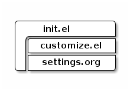
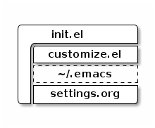

NobbZ-Emacs Configuration
Table of Contents
1 Foreword
A properly rendered version of this document is available at the following places:
This file is massively inspired/shamelessely stolen from the one shown at https://ogbe.net/emacsconfig.html
Before this file is actually loaded the following init.el is
executed.
;; NobbZ init.el ;; Real stuff happens in =settings.org= (require 'package) (setq package-archives '(("gnu" . "https://elpa.gnu.org/packages/") ("melpa" . "https://melpa.org/packages/") ("org" . "http://orgmode.org/elpa/"))) (when (boundp 'package-pinned-packages) (setq package-pinned-packages '((org . "org")))) (package-initialize) (unless (package-installed-p 'use-package) (package-refresh-contents) (package-install 'use-package)) (eval-when-compile (require 'use-package)) ;; Set the load path (add-to-list 'load-path "~/.emacs.d/lisp/") (add-to-list 'load-path "~/.emacs.d/vendor/org/lisp") ;; Moved all the custom.el stuff into its own file called ;; =~/.emacs.d/customize.el= (setq custom-file "~/.emacs.d/customize.el") (load custom-file) (setq hostname (replace-regexp-in-string "\\`[ \t\n]*" "" (replace-regexp-in-string "[ \t\n]*\\'" "" (shell-command-to-string "hostname")))) (require 'org) (defface org-block-begin-line '((t (:foreground "#99968b" :background "#303030"))) "Face used for line delimiting the begin of source blocks.") (defface org-block-end-line '((t (:foreground "#99968b" :background "#303030"))) "Face used for line delimiting the end of source blocks.") (org-babel-load-file "~/.emacs.d/settings.org")
The structure of the loading sequence as it is today can be seen in figure 1, while the planned way to load can be found in figure 2.

Figure 1: Current file loading structure

Figure 2: Planned file loading structure
2 Helpers
Small little helpers which make it easier to live-reload the config:
(defun reload-settings () (interactive) (org-babel-load-file "~/.emacs.d/settings.org")) (defun settings () (interactive) (find-file "~/.emacs.d/settings.org"))
3 Packages
(setq package-list '(use-package framemove htmlize)) ;; (unless package-archive-contents ;; (package-refresh-contents)) (dolist (package package-list) (unless (package-installed-p package) (package-install package)))
(use-package framemove)
3.1 which-key
which-key provides a minor mode, that displays the key bindings
following your currently entered incomplete command in a pop up.
3.1.1 Install and load
(unless (package-installed-p 'which-key) (package-install 'which-key)) (require 'which-key) (which-key-mode)
3.1.2 Configuration
1 second is a very long delay, I do think that about a tenth of a second is enough.
(setq which-key-idle-delay 0.1)
3.1.3 Key-chords
which-key does not have any key-chords on its own, but I will enter
some global stuff here.
(which-key-add-key-based-replacements "C-x C-f" "Open file" "C-x C-s" "Save file")
4 TODO Security
5 Appearance, UI Elements, and the Emacs server
First start a server and then set some important appearance
settings. Note that some of the settings are in init.el.
5.1 The server
Start the server if not already running.
(load "server") (unless (server-running-p) (server-start))
When connected to a server using emacsclient, we want to kill the
client using C-x k, the way it seems natural.
(add-hook 'server-switch-hook
(lambda ()
(when (current-local-map)
(use-local-map (copy-keymap (current-local-map))))
(local-set-key (kbd "C-x k") 'server-edit)))
5.2 Appearance
5.2.1 Theme & Faces
(load-theme 'wheatgrass) ;; A nice dark theme (set-face-attribute 'default nil :height 100) ;; 10pt font height (set-face-attribute 'default nil :family "Consolas") (set-face-attribute 'fringe nil :background "#2d2d2d") (set-face-attribute 'font-lock-comment-face nil :slant 'italic :weight 'semibold) ;; (set-fontset-font "fontset-default" 'unicode "DejaVu Sans Mono for Powerline") (global-hl-line-mode t)
5.2.2 UI Elements
Get rid of that ugly disturbing stuff no one needs…
(menu-bar-mode -1)
(when (display-graphic-p)
(tool-bar-mode -1)
(scroll-bar-mode -1))
5.2.3 Welcome Screen
We also want to get rid of the splash screen and start into home directory.
(setq inhibit-startup-message t) (setq inhibit-splash-screen t) (setq initial-scratch-message nil)
5.2.4 TODO Window Geometry
5.2.5 TODO Scrolling
I need to find out how to let emacs behave as with spacemacs
smoothscrolling setting.
6 Pathes
6.1 Autosave and Backup
Autosaves directly beneath the edited files do clutter up the
sourcetree. Instead let's throw them inside ~/tmp/.
(defvar backup-dir (expand-file-name "~/tmp/emacs_backup/")) (defvar autosave-dir (expand-file-name "~/tmp/emacs_autosave/")) (setq backup-directory-alist (list (cons ".*" backup-dir))) (setq auto-save-list-file-prefix autosave-dir) (setq auto-save-file-name-transforms `((".*" ,autosave-dir t))) (setq tramp-backup-directory-alist backup-directory-alist) (setq tramp-auto-save-directory autosave-dir)
6.2 TODO Dropbox
We need to know the basepath of dropbox.
The current function to read the path from dropbox' config is very
ugly and needs some care to make it more beautiful.
(require 'json) (defun find-dropbox-folder () (interactive) (let ((json-path (if (eq system-type 'gnu/linux) (expand-file-name "~/.dropbox/info.json") (concat (getenv "APPDATA") "\\..\\Local\\Dropbox\\info.json")))) (cdr (assoc 'path (car (json-read-file json-path)))))) (defvar dropbox-base-path (find-dropbox-folder))
7 Window Movement
Use Shift-<Arrow> to navigate through windows.
(require 'framemove) (windmove-default-keybindings) (setq framemove-hook-into-windmove t)
8 Debugging
Setup some keys to make it easier to use GUD.
(global-set-key (kbd "<f7>") 'gud-cont) (global-set-key (kbd "<f6>") 'gud-step) (global-set-key (kbd "<f5>") 'gud-next) (global-set-key (kbd "<f8>") 'gud-finish)
9 Traiiling Whitespace
We want to see trailing whitespace, since it is the devil.
(require 'whitespace) (setq-default show-trailing-whitespace t)
9.1 But do not display in some modes
(defun no-trailing-whitespace () (setq show-trailing-whitespace nil))
Add a line for each mode:
(add-hook 'buffer-mode-hook 'no-trailing-whitespace)
(add-hook 'minibuffer-setup-hook 'no-trailing-whitespace) (add-hook 'term-mode-hook 'no-trailing-whitespace)
10 TODO Dired
10.1 General Settings
The dirst two lines stop dired from asking me if I really want to recursively delete/copy directories. I never answer "no" to that question.
The other lines enable "Do What I Mean" mode for dired, using the other buffers location as target when copying in split-screen mode.
(setq dired-recursive-copies 'always)
(setq dired-recursive-deletes 'always)
(setq dired-dwim-target t)
(setq dired-listing-switches "-alh")
11 Org-Mode
org-mode might be THE killer app for emacs.
11.1 Installation
(use-package org :ensure t :defer t :pin org)
11.2 General settings
Some general settings for org.
(require 'org) (setq-default org-return-follows-link t org-image-actual-width '(400) org-highlight-latex-and-related '(latex script entities)) (add-hook 'org-mode-hook 'turn-on-auto-fill)
11.3 Allow execution of src-blocks
First we need an empty list
(setq nobbz-babel-languages-alist '())
11.3.1 \LaTeX
(require 'ob-latex) (add-to-list 'nobbz-babel-languages-alist '(latex . t))
11.3.2 Emacs-Lisp
(add-to-list 'nobbz-babel-languages-alist '(emacs-lisp . t))
11.3.3 Ditaa
(add-to-list 'nobbz-babel-languages-alist '(ditaa . t))
11.3.4 Applying the stuff
(org-babel-do-load-languages 'org-babel-load-languages nobbz-babel-languages-alist)
11.3.5 Execution security
(defun nobbz-org-confirm-babel-evaluate (lang body) (not (string= lang "ditaa"))) ; don't ask for ditaa (setq org-confirm-babel-evaluate 'nobbz-org-confirm-babel-evaluate)
11.4 Syntax-Highlighting in sourceblocks
This is a very important feature in an org-document. Also adds native
<tab> behaviour in those blocks.
(setq org-src-fontify-natively t org-src-tab-acts-natively t)
11.5 HTML Export
There shall be a custom stylesheet for HTML export.
(require 'ox-html) (setq org-html-htmlize-output-type 'inline-css)
11.6 PDF-Export
Use minted as a highlighter.
(require 'ox-latex) (add-to-list 'org-latex-packages-alist '("" "minted")) (setq org-latex-listings 'minted)
Also we want to use latexmk as the build-manager and lualatex as
the engine.
(setq org-latex-pdf-process
'("latexmk -lualatex -f -shell-escape %f"))
11.7 Agenda
We want to have this file itself on our agenda.
(setq org-default-notes-file (concat dropbox-base-path "/Dokumente/org/TODO.org")) (add-to-list 'org-agenda-files (concat dropbox-base-path "/Dokumente/org/TODO.org")) (add-to-list 'org-agenda-files "~/.emacs.d/settings.org")